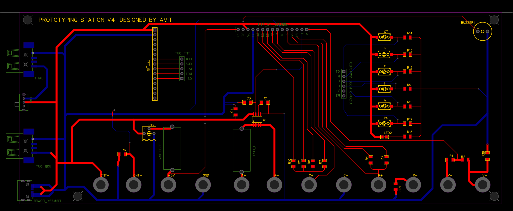
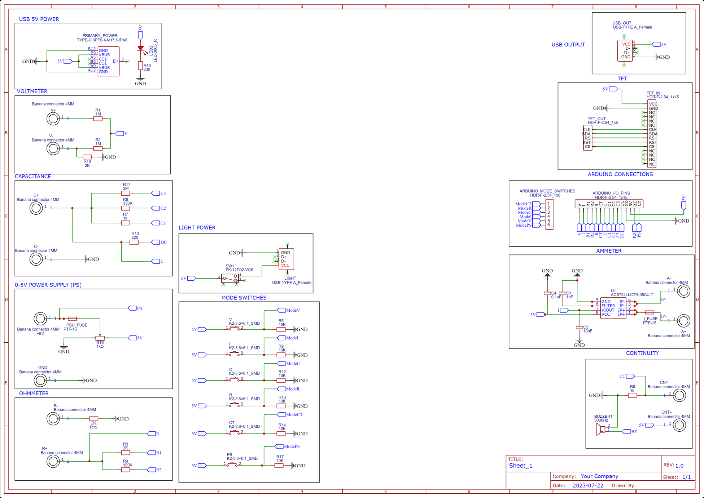

Electronics Prototyping Station
A-level Project (2023/24) — A comprehensive user-oriented design, integrating an Arduino MEGA, custom PCB, and 3D printed DFMA enclosure into an all-in-one testing station.

01The Brief
This was an open design project, with the only goals being to develop a unique product, that would solve a real-world problem for a tangible target market and end user. Much of early stages of the project was spent analysing the market and identifying a problem that could be solved within the scope of the time and budget.
02Design Philosophy
Being an avid hobbyist in DIY electronics, one of the first things that came to mind was just how complex and unintuitive the process of DIYing can be for beginners. It was hardly a welcoming space, and with IoT and consumer AI taking off, it was a time where DIY IoT was gaining more traction than ever. This led me to developing what I called : The Electronics Prototyping Station. An 'All-in-one' product that would allow user to easily test and develop their own hobby level circuits, aiming at the very avid but amateur audience.
03Technical Depth & Achievements
Delivered a fully functional, high-accuracy desktop testing station with accurate measurement capabilities for : Voltage, Resistance , Capacitance, Current and Continuity. Successfully satisfied vast majority end user requirements, scoring 100/100.
05Project Resources & Media
